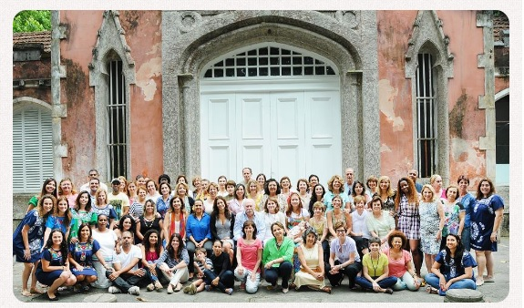

A Ong Maranata é uma organização não governamental localizada em Pinheiros que atende jovens de 7 a 21 anos do entorno e das comunidades vizinhas, oferecendo ao jovem a oportunidade de desenvolver mecanismos para sua formação futura.
Fundada em 2x 018 por Cristiane Barbosa e Felipe Kazuyoshi, estudantes de Analise em Desenvolvimento na Universidade Presbiteriana Mackenzie, que tiveram a ideia de criar programas divertidos para Crianças e Jovens necessitadas que combinava com acolhimento e educação. A ong começou com acolhimento de crianças em situação vulnerável, oferecendo-lhes o acesso à educação, valores como afeto, respeito e principalmente alternativas para criar outra expectativa de futuro.
Missão
- Atender crianças e seus familiares em situação de vulnerabilidade social, oferecendo-lhes educação complementar e capacitação para um desenvolvimento social pleno.
Visão
- Trabalhamos por um mundo saudável e sustentável onde todos tenham as mesmas oportunidades e direitos.Ser referência na formação de cidadãos realizados e motivados a cooperar em suas comunidades.
Valores
- A educação é fundamental para desenvolver o potencial de cada criança.
- Toda criança tem a capacidade de se desenvolver quando se encontra em um ambiente seguro, com oportunidades e amor.
- Integridade, honestidade, respeito e desejo de amar ao próximo, assim como ajudar o outro, são medidas essenciais para o êxito pessoal.
- Cada indivíduo é responsável por seu destino, e as crianças devem ter o direito e a oportunidade para escolher um caminho no qual possam construir e aproveitar todo o seu potencial, da forma como desejarem.
- Respeito, dignidade, valores, perspectivas e talentos de cada um são a base de um desenvolvimento sustentável do individuo assim como a formação de uma comunidade forte e engajada socialmente.
- Espiritualidade e uma vida ativa de fé são elementos essenciais para o desenvolvimento pessoal saudável.
Faça a sua inscrição
As inscrições sempre estão abertas. Venham Participar!